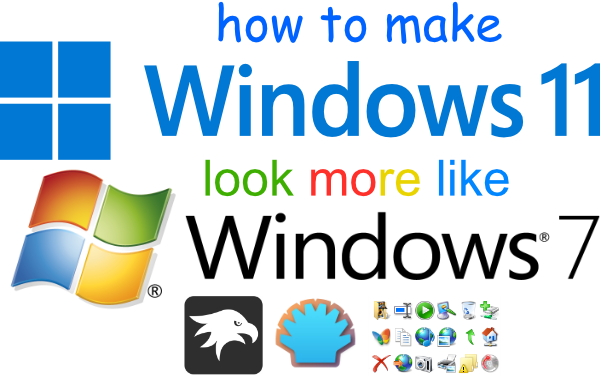
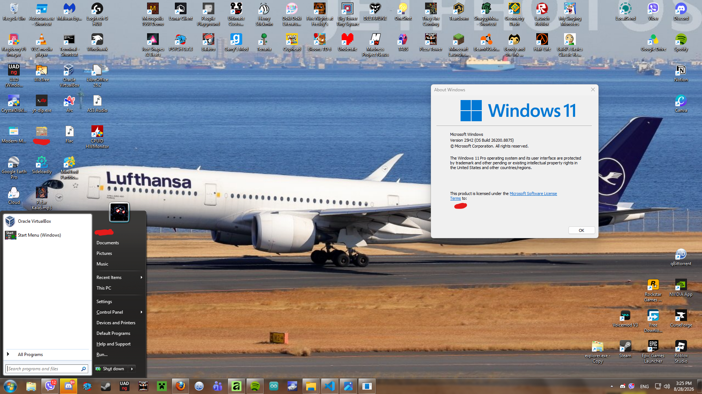
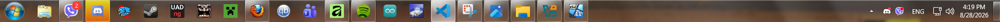
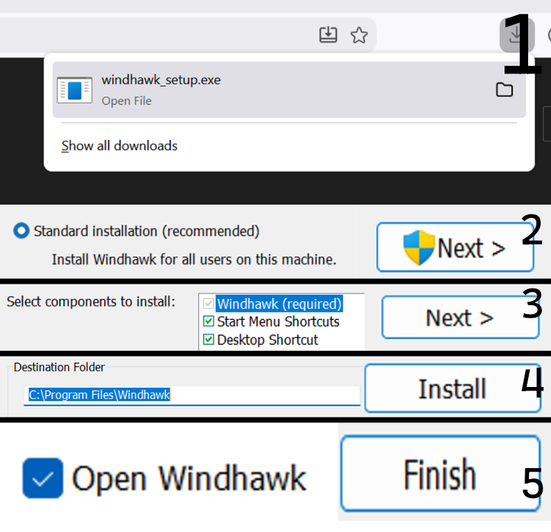
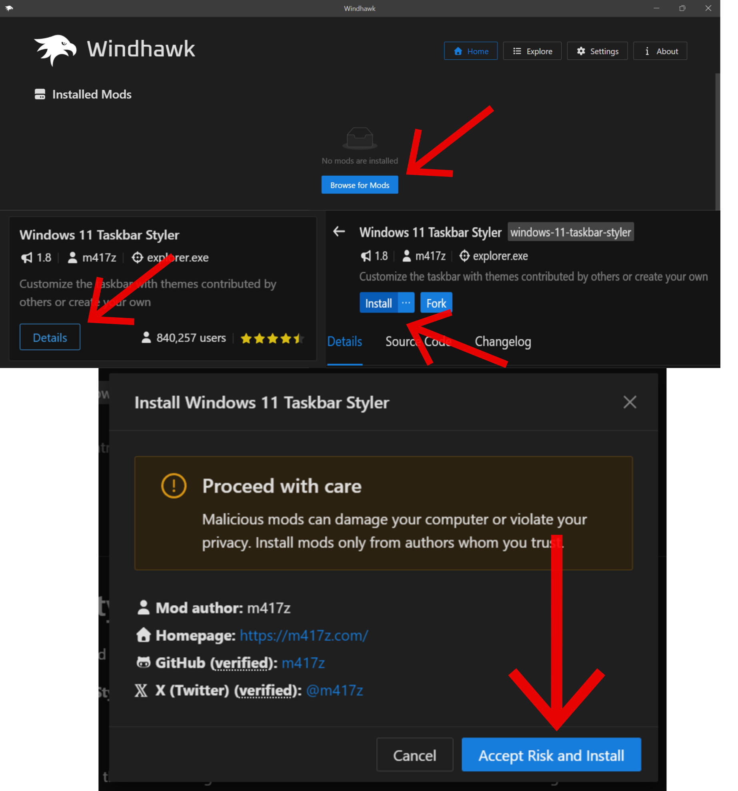
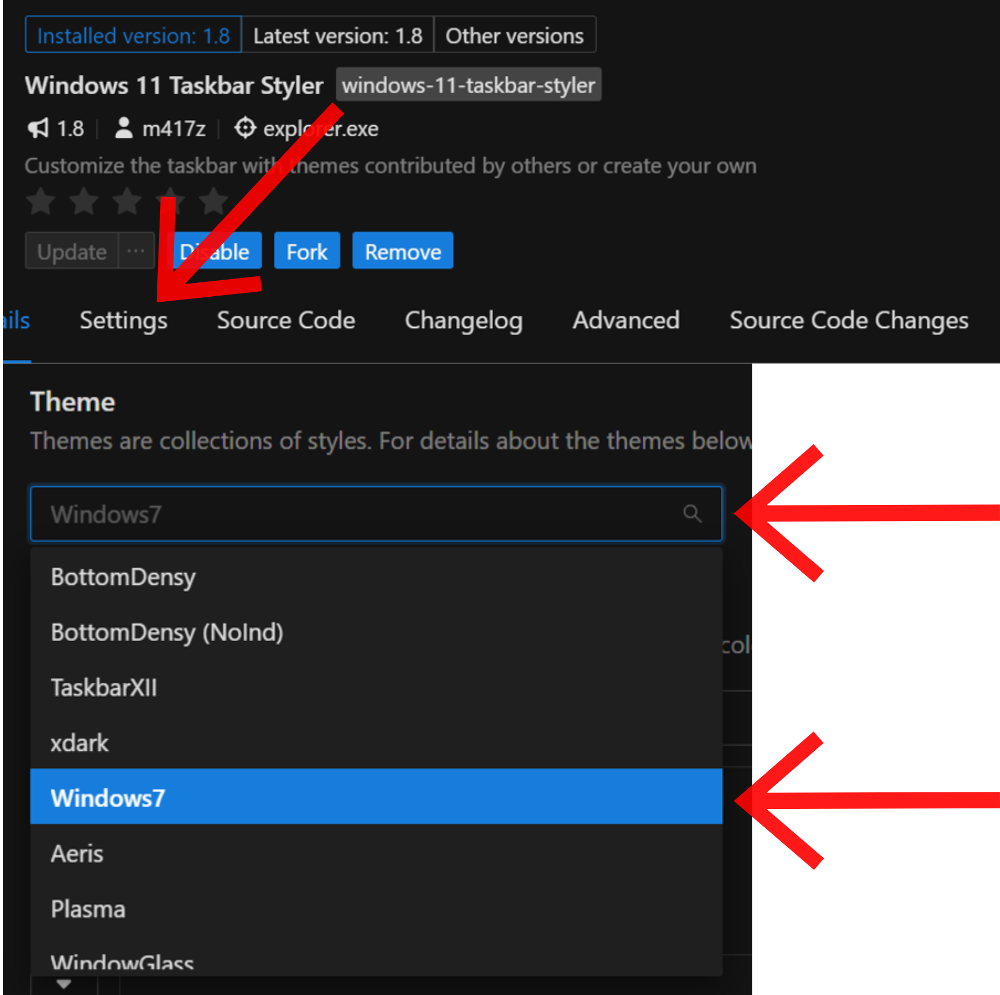
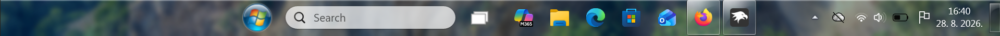
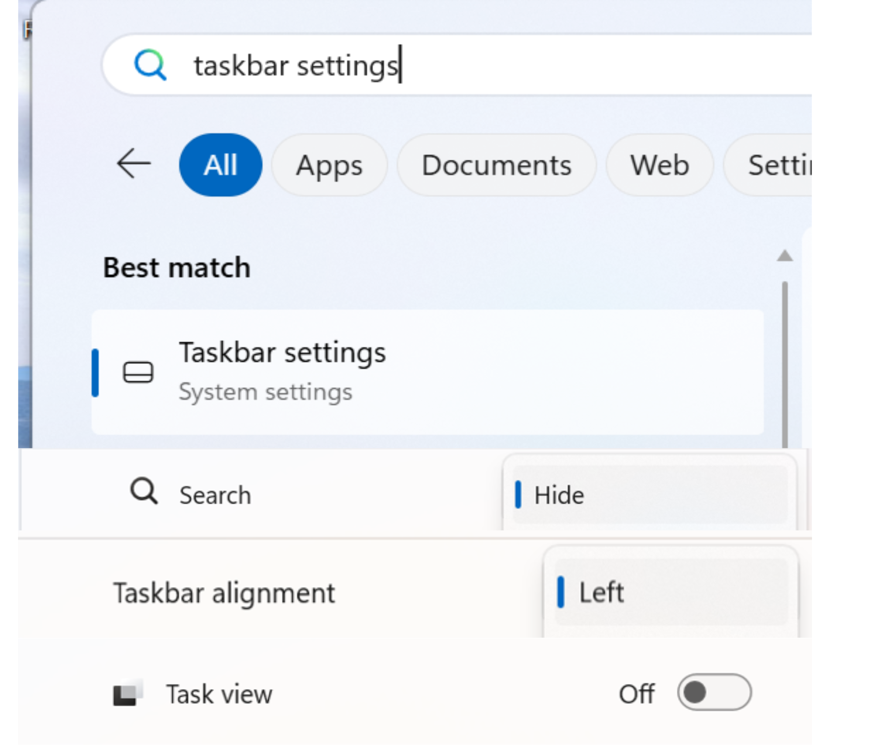
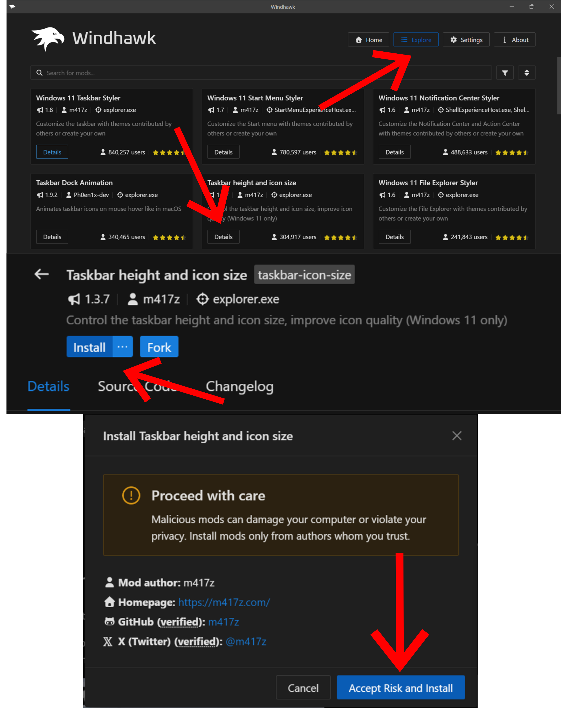
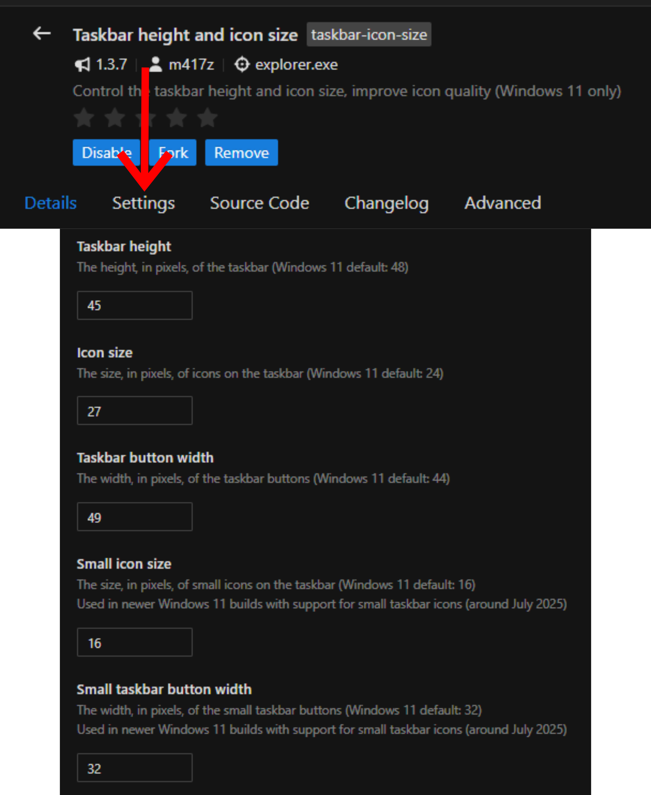

so many of yall liked my retro Windows 7 style setup on my main Windows 11 machine... to show my gratitude for yall, i'll be going over how i achieved that classic frutiger aero look everyones been going crazy for...

| NAME | DESCRIPTION | DOWNLOAD LINK |
| Windhawk | Required for changing the look of the taskbar | Download link (windhawk.net) |
| OpenShell | Required for changing the look of the start menu | Download link (GitHub repository) |
| Original Windows 7 Icond (Virtualcustoms) | Required for changing the look of the sysyem icons | Download link (virtualcustoms.net) |
as i have already mentioned, windhawk is a program that lets you change the look of the taskbar to almost perfectly match the original Windows aero look, with the only downside being that it needs an internet connection or it'll look buggy...

"almost 1:1..."
first and foremost, run the installer, accept the UAC window, and let the installer handle the heavy lifting

"STEP 1. Run the installer once downloaded"
"STEP 2. Make sure that the Standard Installation option is toggled."
You will need to press "Yes" in the UAC window.
"STEP 3. Just hit Next. No more no less is needed."
"STEP 4. Leaving the destination folder completely default is okay unless you really need to change it"
shortly after the initial install, the program itself should launch automatically... take the next steps with ease and your Windows 11 will slowly start looking like the long desired Windows 7 style that I promised.
once the program launches, you need to install the main taskbar styler mod and tweak it, otherwise it will look like a hot mess...

STEP NO. 1: On the homepage, hit Browse for mods .
STEP NO. 2: Find the taskbar styler modification, press Details, then hit the Install button.
STEP NO. 3: Accept Risk and Install (worry not, all of the mods by m417z are 100% safe and free from malicious code.)
now let's get to the tweaking to finish the taskbar mod for once and for all... these steps are SUPER IMPORTANT so lock tf in...

STEP NO. 1: On the page for the taskbar styler, hit Settings.
STEP NO. 2: Expand the Themes menu, scroll down untill you find the Windows7 theme.
now, once these steps are complete, the taskbar looks completely off due to the default Windows settings. worry not as this can be completely eliminated in the settings app!

"bradar wat is this"

STEP NO. 1: Go to Search and type in "Taskbar settings" and proceed.
STEP NO. 2: Hide the Search box, as that feature is not available in Windows 7.
STEP NO. 3: Change the taskbar alignment to the left side, as it is like that on Windows 7.
STEP NO. 4: Turn of Task view, as that feature is not available in Windows 7.
if done correctly , your taskbar should look way cleaner, but the icon sizes are still a little off... worry not! we can fix that using the taskbar height and icon size mod

STEP NO. 1: On the homepage, hit Browse for mods .
STEP NO. 2: Find the taskbar height and icon size modification, press Details, then hit the Install button.
STEP NO. 3: Accept Risk and Install (worry not, all of the mods by m417z are 100% safe and free from malicious code.)
once installed, we need to tweak the sizes...

SETTING VALUE Taskbar height 45 Icon size 27 Taskbar button width 50 Small icon size 16 Small taskbar button width 32 and voilla! you have successfully recreated the classic Windows 7 taskbar style using Windhawk!